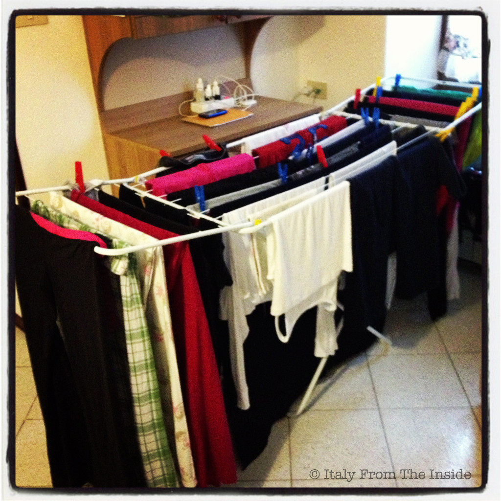

Every time I think about the first times I did my laundry in the States I feel a stinging wave of shame and foolishness. Why? Because I was coming from a country where at that time (and even now) only a few people owned "the beast". Yes, this is how the dryer looked to me: as a fierce machine only able to ruin and shrink your "made in Italy" garments. Therefore not only I sticked to the stupid decision of not using it, but I was also doing something even more stupid: I was hanging my clothes inside my small condo, exactly how most Italians do. There's only one difference: in Italy it rains sporadically, while in Seattle it rains almost every day. I don't even want to mention the amount of humidity that was forming on our single pane windows. I'm sure people from outside thought we were living in an aquarium... However last year, during our year-long stay in Italy, I had to go "back to normal", which means checking the forecast before doing the laundry, as most Italians do. After that, you are usually left with three options: Option A. It is going to be a sunny day and you can hang everything outside taking into consideration one only caveat: if you share the drying ropes with a neighbor, you better hurry up and be there before them. Option B. It is going to be a decent day and you can hang everything outside, but you better stick around in case of a sudden shower (been there, done that). Option C. It is going to rain for the next 5 days and your kids are running out of socks. You have no choice than doing the laundry and having the drying rack tra i piedi (which is a flamboyant way to say "in the way") for the next two days. Obviously you wish that everything is going to be dry in 24 hours. Yes, sure. The photo above is clearly the result of option C...